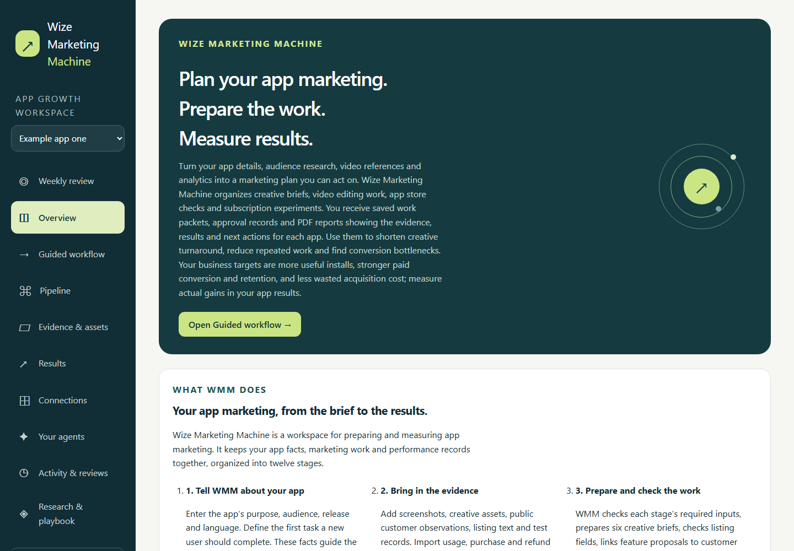
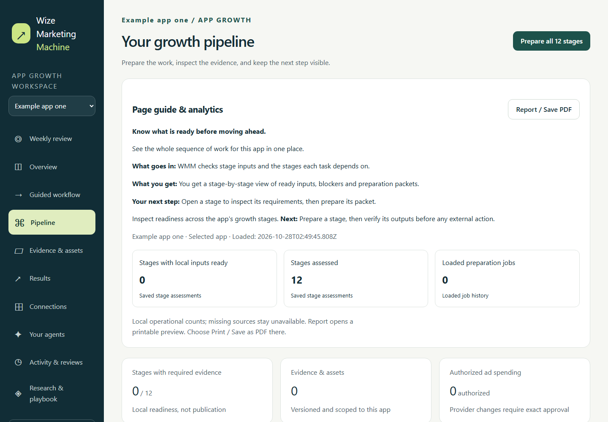
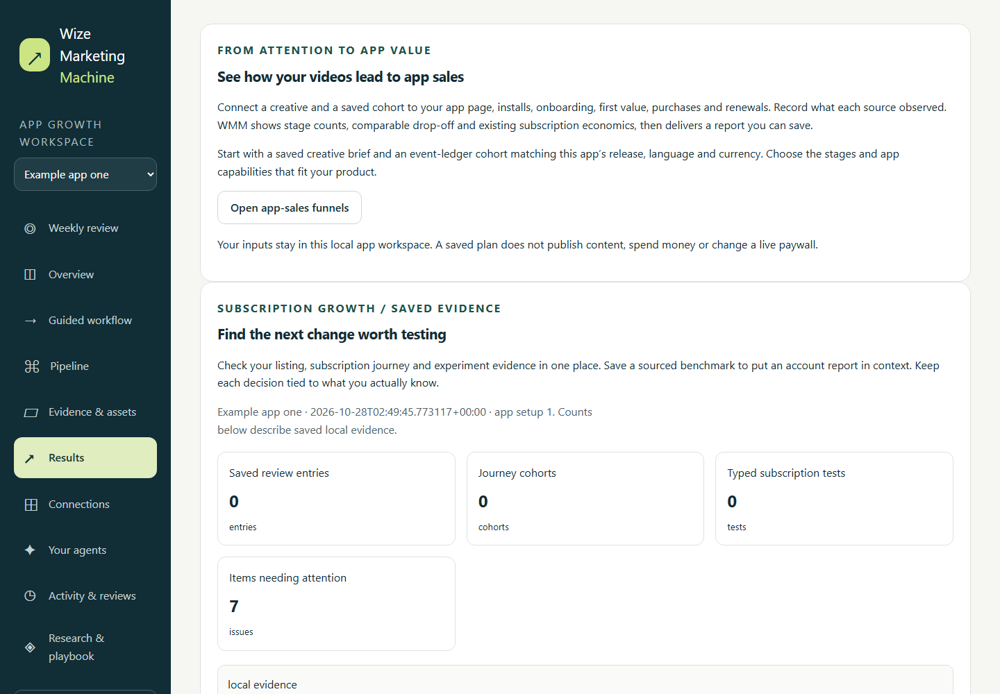

1. Collect the evidence
Add your app, audience, approved claims, media and research references. Import results or connect supported analytics sources using your own account.
APP MARKETING · RESEARCH · CREATIVE · MEASUREMENT
Wize Marketing Machine brings your app facts, audience research, creative work and analytics evidence into one local workspace. Build a marketing plan, prepare video and app store experiments, review agent work and keep a record of what happened.
Built for your personal AI agent to operate on your behalf. Give a compatible agent an app-marketing objective and scoped permissions. It can run supported workflows, bring you approval decisions and report verified results. You can inspect, edit and operate the same workspace yourself.
Set up your first appAdd your app, audience, approved claims, media and research references. Import results or connect supported analytics sources using your own account.
Follow the twelve-stage workflow to create briefs, review video production work, check app store copy and define subscription experiments. Give agents a scoped task and review the proposed actions.
Get saved work packets, creative plans, approval history, experiment assessments and PDF reports. See what the evidence supports, what is missing and which action comes next.
WMM helps you move from scattered marketing tasks to a repeatable process. These are the practical outcomes to work toward and measure:
The business targets are more useful installs, stronger paid conversion and retention, and lower wasted acquisition cost. WMM provides the workflow and evidence to pursue those targets. Actual improvement must be measured in your app; research rankings, prepared creative and benchmarks do not prove revenue or growth.
These screenshots use synthetic example data from an isolated local workspace. They show the software, not a customer campaign or measured growth.



Use app store optimization (ASO) checks, subscription journey reporting, typed paywall and offer experiments, research collections, creative briefs and video editing workflows in the same app workspace. CLI and MCP adapters let compatible agents operate through the available permissions and approval controls.
Add the app, describe the user action you want to improve, attach the first evidence and open Guided workflow. Core setup requires Python 3.11 or newer. Optional providers require your own supported connection and permissions.
WMM runs locally. Protected connections and native agent availability vary by platform; check the repository support notes before setup. Campaign publication, advertising spend and provider activation require their supported execution paths and approvals. Research and benchmark comparisons do not establish sales or causal growth.
Read the setup guide